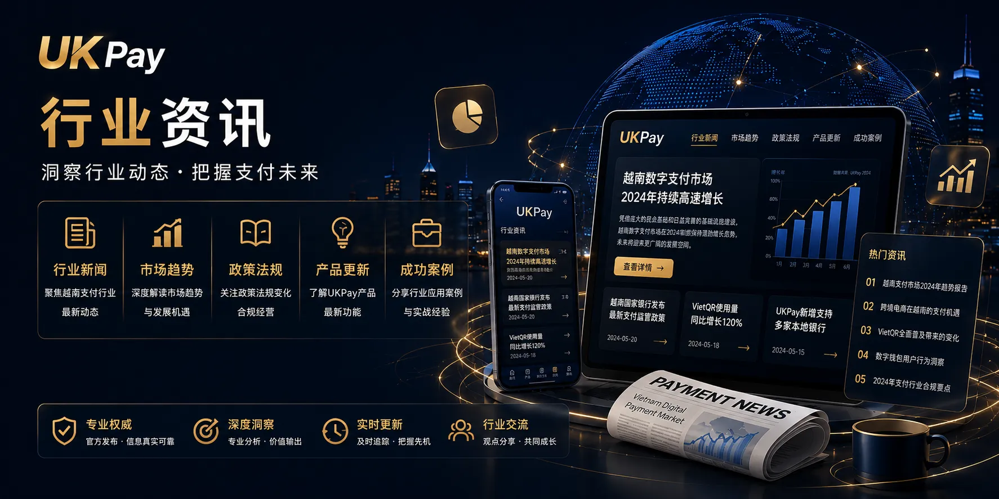

VietQR
VietQR是什么？越南二维码支付生态与企业收款方案
VietQR是越南市场中快速发展的二维码支付方式，通过统一二维码标准，帮助消费者更加方便地完成银行转账和支付。相比传统支付方式，二维码支付具有操作简单、成本较低、覆盖范围广等特点。
阅读全文 →
VietQR是越南市场中快速发展的二维码支付方式，通过统一二维码标准，帮助消费者更加方便地完成银行转账和支付。相比传统支付方式，二维码支付具有操作简单、成本较低、覆盖范围广等特点。
阅读全文 →越南电子商务、移动互联网以及数字经济持续发展，消费者支付习惯正在快速变化。越来越多用户开始使用银行卡、二维码支付以及电子钱包完成日常交易。如何连接稳定的越南支付通道，成为业务本地化的重要环节。
阅读全文 →银行卡支付正在成为消费者线上交易的重要方式。越来越多企业在进入越南市场时，需要支持当地银行卡、银行转账以及本地支付方式。因此，稳定的越南银行卡收款通道，成为跨境企业本地化运营的重要基础设施。
阅读全文 →随着越南电子商务、数字服务以及海外企业投资持续增长，越来越多企业开始进入越南市场。但是，不同国家之间的支付体系存在差异，海外企业通常需要解决：
阅读全文 →随着东南亚数字经济持续增长，越南正在成为越来越多海外企业重点布局的新兴市场。从跨境电商、线上娱乐，到数字服务、软件订阅以及国际贸易，越来越多企业希望通过越南市场获得新的增长机会。
阅读全文 →随着越南数字经济快速发展，二维码支付正在成为当地消费者日常交易的重要方式之一。从大型商场、连锁餐饮，到街边小店、线上电商平台，二维码支付的应用场景不断扩大。
阅读全文 →无论是电商平台、游戏平台、在线服务企业，还是跨境贸易公司，在业务发展的过程中都会遇到一个核心问题：如何建立稳定、高效的越南支付系统？
阅读全文 →获取用户并不是业务成功的全部，如何让用户顺利完成付款，才是实现商业转化的重要环节。很多企业在进入越南市场初期，会发现一个问题：网站有访问量，产品也受到用户关注，但是订单支付完成率并不理想。
阅读全文 →随着电子商务、移动互联网、线上娱乐、跨境贸易等行业快速增长，企业对于支付基础设施的需求也不断提升。过去，企业进入越南市场时，更多关注产品、流量和销售渠道
阅读全文 →过去，企业关注的问题主要是“用户能不能付款”；而现在，随着交易规模扩大，企业更加关注：收款是否稳定；资金是否安全；结算是否高效；财务是否容易管理；交易数据是否可以追踪。
阅读全文 →接入支付通道只是完成交易的第一步，如何让用户快速、顺畅、安全地完成付款，才是真正影响业务转化率的关键。很多企业在运营过程中发现，即使已经接入越南本地支付渠道，订单支付成功率依然存在提升空间。
阅读全文 →无论是跨境电商、游戏平台、数字内容平台，还是SaaS服务企业，都需要一个稳定、高效、符合当地用户支付习惯的支付体系。而越南支付API接入，正成为企业快速连接当地支付生态，实现自动化交易处理的重要方式。
阅读全文 →一个稳定、高效的越南代付通道，已经成为业务长期发展的重要基础设施。相比传统人工转账模式，专业的越南代付解决方案能够帮助企业实现自动化资金分发，提高资金流转效率，同时降低运营成本。
阅读全文 →越南消费者的支付习惯正在发生明显变化，现金支付比例逐渐下降，二维码支付、银行卡转账以及电子钱包支付快速普及。根据越南支付行业公开数据，非现金支付交易持续增长，其中二维码支付成为增长速度较快的支付方式之一。
阅读全文 →关注越南数字支付发展、 市场规模以及行业变化。
分享API、 Webhook、 支付系统架构知识。
分析海外企业进入越南市场的支付方案。
介绍电商、 游戏、 数字服务支付案例。
随着越南数字经济持续增长， 企业对于本地支付能力的需求不断提升。 稳定的越南支付通道、 银行卡收款、 VietQR二维码支付， 正在成为跨境企业进入越南市场的重要基础设施。
UKPay专注于越南第三方支付服务， 帮助企业连接本地银行、 支付钱包以及数字支付网络， 提供更加高效、安全的支付解决方案。
通过行业资讯中心， UKPay将持续分享越南支付生态、 支付技术趋势以及企业本地化运营经验。
主要分享越南支付市场、 支付技术、 跨境支付以及行业趋势。
UKPay会持续更新越南支付相关行业内容。
可以通过联系我们获取专业方案。
获取最新支付市场分析和行业资讯。